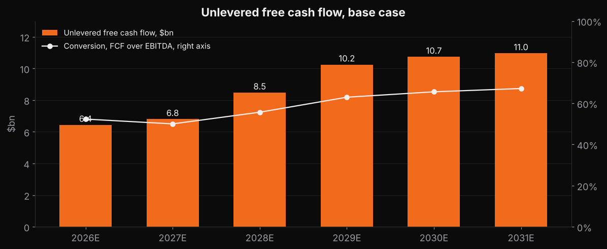
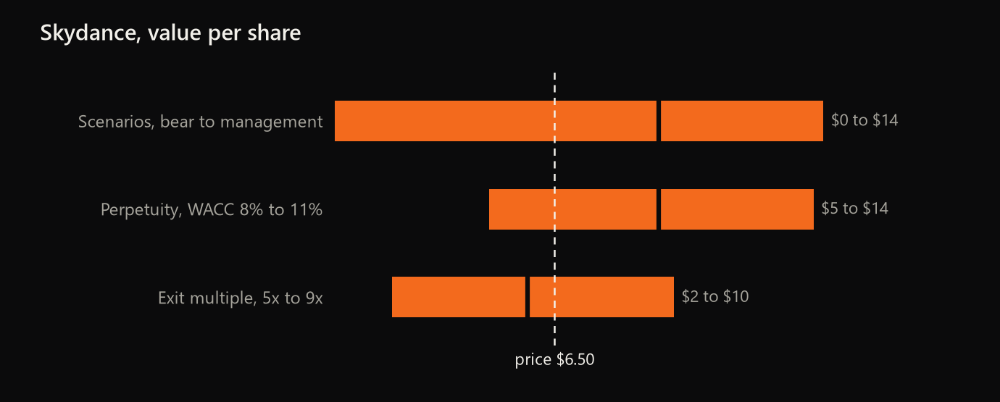

Skydance DCF model.

This model anchors the media set. It asks what the company that just bought Warner Bros. Discovery is worth, and what must hold for the shares to be worth more than $7.77 with $89 billion of debt.
The question, the method, the finding, and what it means
- The question
- What is the combined Skydance worth under $89 billion of debt, and how much of that value is the merger itself?
- Data and method
- The model uses a pro forma base year from both companies' filings and the October 2026 8-Ks, three revenue lines, a separate synergy line, and a 9.2 percent WACC built from a 2.4 levered beta and an 8 percent cost of debt.
- What I found
- The model gives $8.80 a share on the perpetuity method and $4.97 on the exit multiple, against a price of $7.77. Almost all of the EBITDA growth comes from synergies, and the bear case takes the equity below zero.
- What it means
- The discount rate is a harder judgment than the forecast. One point of WACC is worth $3 to $4 a share, which helps explain why the bonds yield 10 to 13 percent and the equity trades like an option on the synergies.
I covered its tender at Finsight
I covered the Paramount Skydance tender at Finsight and wanted to value a company whose bonds I had watched trade. By the time I built it, Paramount Skydance had closed its $110 billion purchase of Warner Bros. Discovery and become Skydance Corporation, SKYD on the NYSE. The model therefore values the combined company, which has about $70 billion of revenue, $89 billion of gross debt and 5.04 billion shares.
The deal was paid for with $47 billion of new equity at $12 a share and about $52 billion of new debt. The stock closed at $7.77 on October 23. S&P cut the company to BB and the old Paramount bonds yield 10 to 13 percent. With that capital structure, the discount rate is a harder judgment than the forecast.
A small premium on one method and a discount on the other
The implied value per share in the base case, using the perpetuity method at a 9.2 percent cost of capital and 1.5 percent long term growth. The shares closed at $7.77 on October 23, 2026.
The implied value per share in the base case, using the exit multiple method at 7 times 2031 EBITDA. The two methods disagree, and I report both figures instead of choosing one.
The range across the sensitivity grid, with the cost of capital at 8 to 11 percent and growth at 1 to 2 percent. Street price targets run from $2 to $13.74.
The equity value in the bear case. If half the synergies are realized and linear television declines 11 percent a year, the $84 billion of net debt exceeds the value of the business.
The share of enterprise value that sits in the terminal value. The result therefore depends more on what the company looks like after 2031 than on the next five years.
The synergies realized by 2030 in the base case, against a management target of $6 billion. Almost all of the EBITDA growth comes from this line.
These are model outputs under stated assumptions. Nothing on this page is a recommendation to buy or sell anything.
Pro forma from two companies' filings, with every input on one sheet
- Base year. Paramount Skydance's fiscal 2025 results plus Warner Bros. Discovery's, giving $66 billion of revenue and $12 billion of adjusted EBITDA, which matches the pro forma 8-K and the Street's 2026 consensus.
- Revenue. Three lines, streaming, linear networks and studios, each with its own growth path. Streaming grows 9 percent fading to 4, linear falls 8 percent fading to 6, studios grow 3.
- EBITDA. An underlying margin that drifts down as linear shrinks, plus a separate synergy line so the reader can see how much of the value is the merger.
- Cash flow. EBITDA less stock compensation, integration cash costs, cash taxes at 23 percent, capex at 2.1 percent of revenue and a content and working capital line. Stock compensation is treated as a real cost.
- Discount rate. A 0.9 unlevered media beta relevered for a 2.2 debt to equity ratio gives a 2.4 levered beta and a 15.7 percent cost of equity. An 8 percent cost of debt, blended from the new 7.05 and 8.875 percent notes and the legacy unsecured yields, at market weights gives a 9.2 percent WACC.
- Equity bridge. Enterprise value less $84 billion of net debt at close and $1 billion of noncontrolling interests, over 5.04 billion shares. The 471 million warrants struck at $12 dilute only when the value is above $12, by the treasury stock method.
- Three scenarios on one switch: base, bear and management's plan.
- Four peers and a credit comp on the same template. Netflix, Disney, Comcast and Fox, built the same way, then leverage, coverage and cushion across all five. See Media DCF models and credit comps.
The model in four pictures

Where the EBITDA growth comes fromUnderlying EBITDA before synergies drifts down as linear television shrinks. Every dollar of growth from 2026 to 2031 is realized synergies. 
Unlevered free cash flowConversion rises from about half of EBITDA to two thirds as integration costs roll off. Management's own target is more than $10 billion of free cash flow after interest by 2030, which this model does not reach. 
Cost of capital against long term growthOne point of discount rate moves the value by $3 to $4 a share. The company's own leverage makes the cost of capital the least certain input. 
Four answers on one lineThe two DCF methods, the three scenarios and the Street's targets, next to the market price. The market price falls inside every range.


The company I set out to value no longer existed
My first pass used Paramount Skydance's own filings: $30 billion of revenue, $15 billion of debt, 1.1 billion shares. The company that trades today is twice that size with six times the debt. That would have produced a precise answer for a company that no longer trades, so I rebuilt the base year from both companies' filings and took the debt and share count from the October 2026 8-Ks.
In order of how much they move it
- Synergy realization. The base case takes $5.4 billion of the $6 billion target by 2030. Each $1 billion of run rate synergies is worth about $1.50 a share.
- Linear decline. Three points a year faster, which is what Warner Bros. Discovery's linear networks did in the second quarter of 2026, takes the base case most of the way to the bear case.
- The discount rate. Market weights give 9.2 percent. If management reaches its 3.0 times leverage target by 2029, the equity weight rises and so does the WACC, which lowers the value even as the business gets safer.
- Content cash spend. It sits inside the working capital line at about 1 percent of revenue and I could not source it. The first combined quarterly report, due in November 2026, will say whether that is right.
What has moved since October 23
On October 22, the day before the model's market data, Elon Musk invested about $1 billion in Skydance equity, per Semafor and CNBC. JPMorgan upgraded the stock on October 23 and Citi put a buy on it on October 26, a day it fell 6 percent. It closed at $8.07 on November 2. The perpetuity method says $8.80 and the exit multiple says $4.97, so the price remains where the model placed it, between two methods that disagree.
The model's deleveraging path needs about $47 billion of net debt to go away to hit 3.0 times. One billion dollars of equity is 2 percent of that amount. It is the path I expected the company to need, and it has now begun. The first combined quarterly report comes November 9 and will say whether the content cash spend assumption is right.
The model and its sources
Blue cells are inputs, and the scenario switch is in Inputs C5. The model cites 18 numbered sources, most of them SEC filings, and analyst judgments are labelled where they appear. No input comes from a Bloomberg Terminal or from any employer.